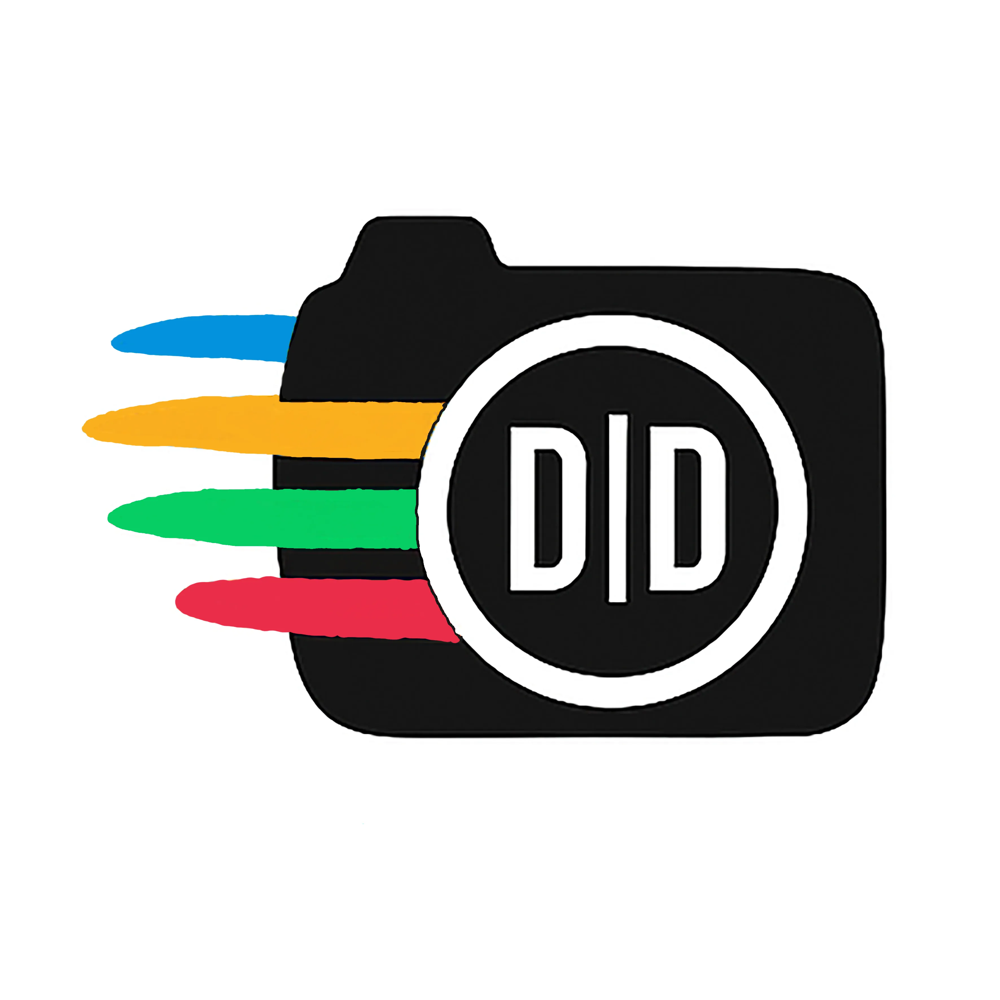

Disparos Deportivos es un medio digital independiente que vive el deporte en todas sus formas. Nacimos capturando momentos y hoy también contamos las historias que hay detrás de cada jugada. Nuestro enfoque combina inmediatez, mirada propia y cercanía con los protagonistas, ampliando la forma en que se cuenta el deporte.
Contar el deporte con una mirada propia, capturando y narrando cada momento que construye su historia, con cercanía, inmediatez y autenticidad.
Ser un medio deportivo independiente reconocido por su estilo, cercanía y forma auténtica de contar el deporte.
Vladimir Valderrama Vega
Director
Alfonso Valderrama Araya
Directora Suplente
Juan Espinosa
Editor y encargado de Pauta
Prensa y colaboraciones
visiondeportiva2024@gmail.com
Contacto Administrativo
vavalderrama@uc.cl